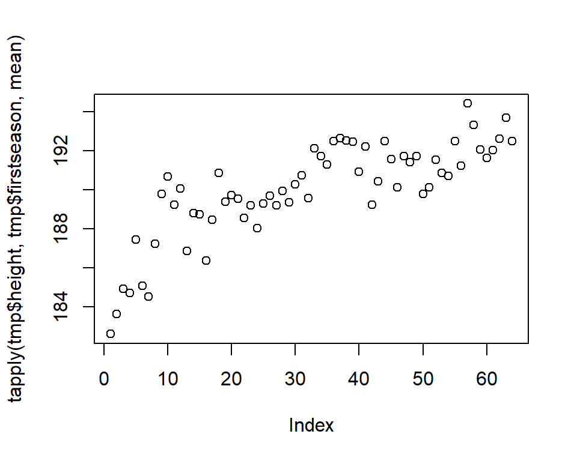
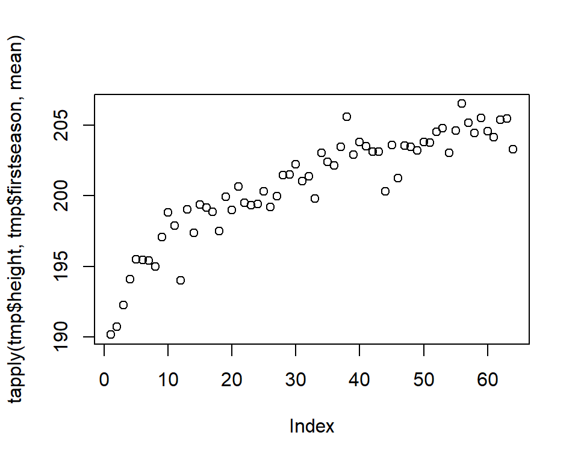
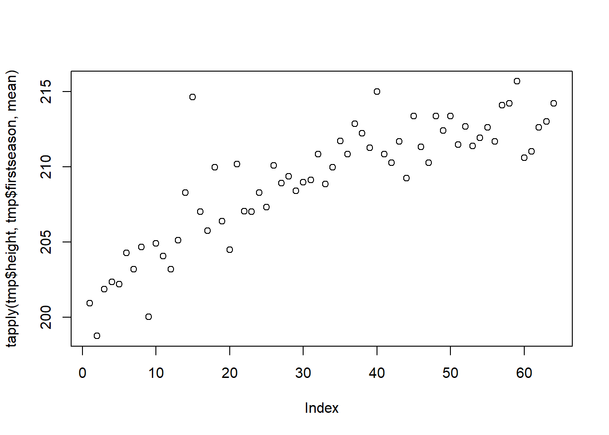
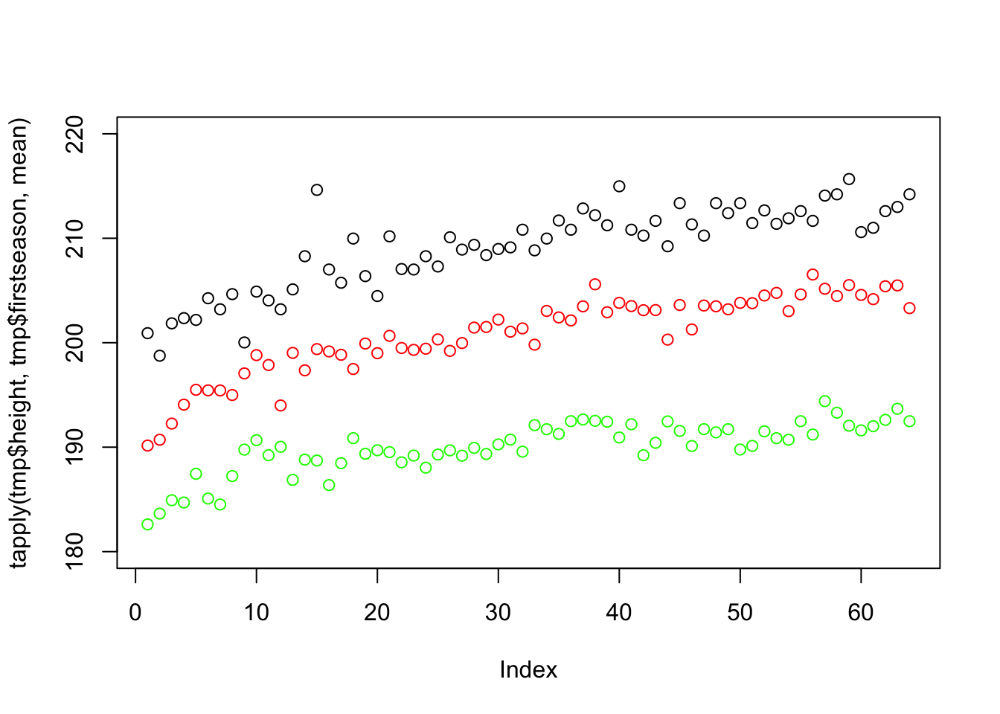
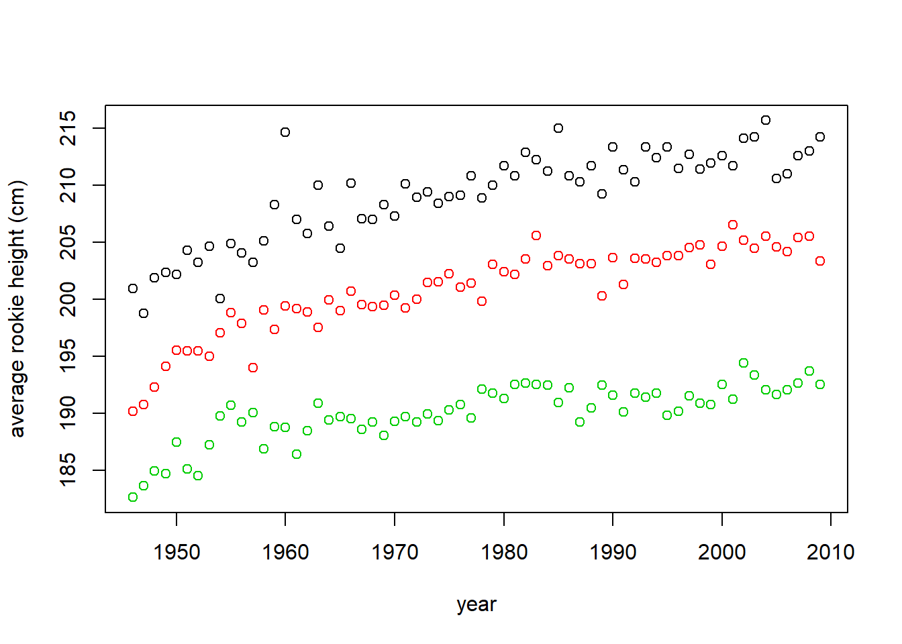
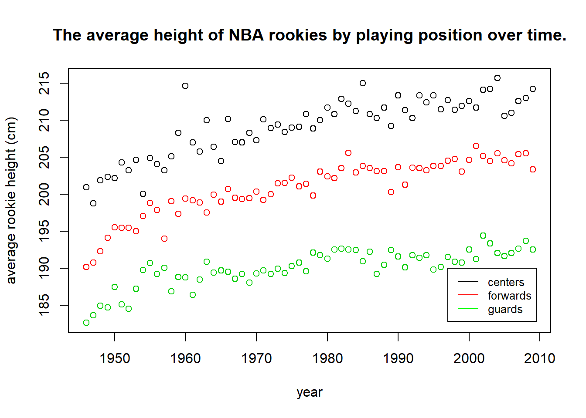
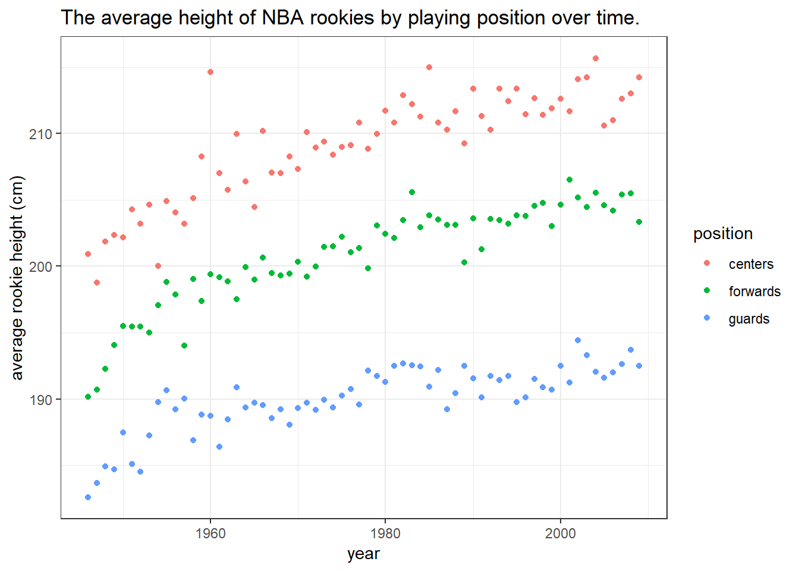
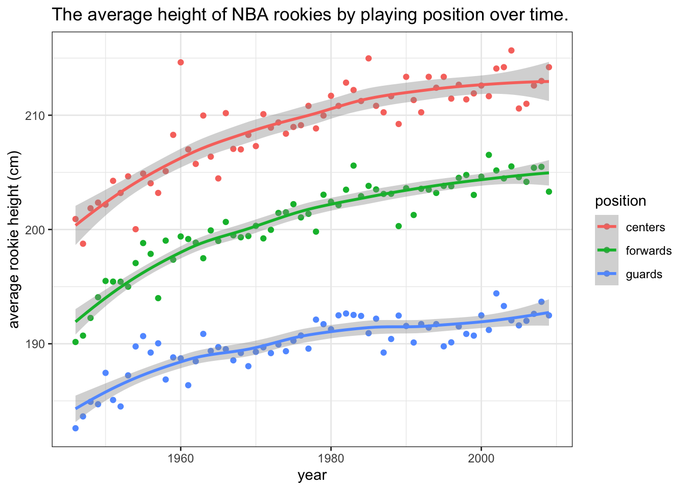
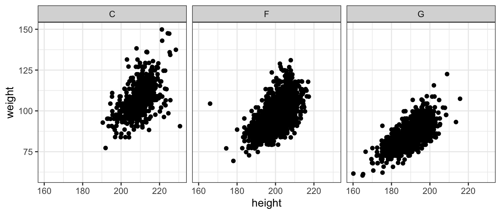
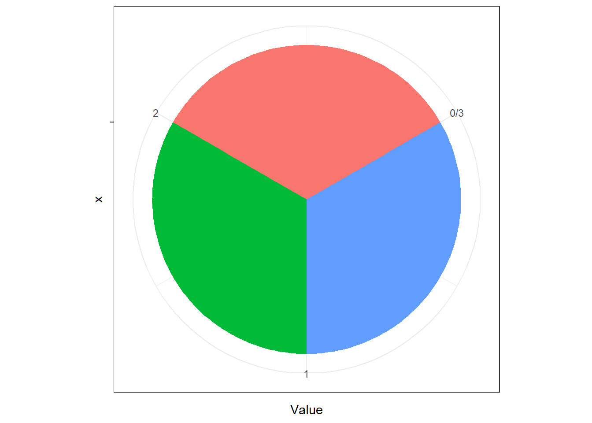

Chapter 6 Summarizing data - visualization
Data summarization - the art of conveying the same information in less time/space or conveying more information in the same amount of time/space. Data summarization is typically numerical or visual (or combined) and is a key skill in data analysis as we use it to provide insights both to others and to ourselves. Data summarization is also an important component of exploratory data analysis. In this chapter we will focus on the basic visualization techniques for univariate and bivariate data. Advanced data summarization techniques will be covered in a later chapter.
We will be using R and ggplot2, but the contents of this chapter are meant to be tool-agnostic. Readers should use the programming language and tools that they are most comfortable with. However, do not sacrifice expresiveness or profesionallism for the sake of convenience - if your current toolbox limits you in any way, learn new tools!
In most examples in this section we’ll be using the NBA players dataset that contains some basic information about NBA players in the period up to year 2009.
library(ggplot2)
dat <- read.csv("./data/NBAplayers.csv")
dat <- dat[complete.cases(dat),]
dat$height <- dat$h_feet * 30.48 + dat$h_inches * 2.54 # in cm
dat$weight <- dat$weight * 0.4536
summary(dat)## ilkid firstname lastname position firstseason
## ABDELAL01: 1 John : 90 Williams: 66 C: 627 Min. :1946
## ABDULKA01: 1 Bob : 88 Smith : 54 F:1665 1st Qu.:1967
## ABDULMA01: 1 Jim : 70 Johnson : 52 G:1614 Median :1980
## ABDULTA01: 1 Mike : 66 Jones : 44 Mean :1979
## ABDURSH01: 1 Bill : 54 Davis : 37 3rd Qu.:1995
## ABERNTO01: 1 Tom : 46 Brown : 34 Max. :2009
## (Other) :3900 (Other):3492 (Other) :3619
## lastseason h_feet h_inches weight
## Min. :1946 Min. :5.000 Min. :-6.000 Min. : 60.33
## 1st Qu.:1970 1st Qu.:6.000 1st Qu.: 3.000 1st Qu.: 83.92
## Median :1985 Median :6.000 Median : 6.000 Median : 92.99
## Mean :1983 Mean :6.022 Mean : 5.581 Mean : 93.91
## 3rd Qu.:2001 3rd Qu.:6.000 3rd Qu.: 8.000 3rd Qu.:102.06
## Max. :2009 Max. :7.000 Max. :11.500 Max. :149.69
##
## college birthdate
## : 200 1945-01-01 00:00:00: 8
## University of California - Los Angeles: 72 1944-01-01 00:00:00: 5
## University of North Carolina : 71 1921-01-01 00:00:00: 4
## University of Kentucky : 67 1931-01-01 00:00:00: 4
## Indiana University : 54 1919-01-01 00:00:00: 3
## University of Kansas : 52 1923-09-18 00:00:00: 3
## (Other) :3390 (Other) :3879
## height
## Min. :160.0
## 1st Qu.:190.5
## Median :198.1
## Mean :197.7
## 3rd Qu.:205.7
## Max. :231.1
## As we mentioned at the beginning - summarization is the art of conveying the same information in less time/space or conveying more information in the same amount of time/space. Visual summaries are often a more informative, faster and more concise alternative to numerical summaries. This will also be our guidelines for improving our visualizations. Can we convey the same information in substantially less time/space? Can we convey more information without using more time/space? If the answer is yes, then we should!
We’ll illustrate this point with an example that features some common mistakes or inefficiencies people do when visualizing data. Our goal will be to summarize how the average height of NBA Centers, Forwards, and Guards that started that year has changed over time.
Let’s plot the averages over time:
tmp <- dat[dat$position == "G",]
plot(tapply(tmp$height, tmp$firstseason, mean))
tmp <- dat[dat$position == "F",]
plot(tapply(tmp$height, tmp$firstseason, mean))
tmp <- dat[dat$position == "C",]
plot(tapply(tmp$height, tmp$firstseason, mean))
The plots reveal information that the average height of rookies has been increasing over time for all three groups of players. However, we should immediately recognize plotting 3 things separately that could be plotted on the same plot wastes space and the reader’s time, having to jump back and forth from one plot to another. This also makes comparison of the time series very difficult. Remember that how we present our results is how we treat our reader. These kind of plots say to the reader that our time and convenience are more important than theirs.
Let’s remedy this mistake:
tmp <- dat[dat$position == "G",]
plot(tapply(tmp$height, tmp$firstseason, mean), col = "green", ylim = c(180, 220))
tmp <- dat[dat$position == "F",]
points(tapply(tmp$height, tmp$firstseason, mean), col = "red")
tmp <- dat[dat$position == "C",]
points(tapply(tmp$height, tmp$firstseason, mean), col = "black")
This plot uses up only a third of the space and simplifies comparison. This reveals new information, such as that centers (black) are higher than forwards (red) who are higher than guards (green), that there was a more steep increase in the beginning of the period and that forwards these days are as high on average as centers were in the past.
However, there are several things that we can still improve on. The first will be one of the fundamental rules of statistical plotting - always label your axes! The reader should never look elsewhere for information about what is plotted. We will also take this opportunity to reorganize our data:
library(reshape2)
tmp <- melt(tapply(dat$height, list(dat$position, dat$firstseason), mean))
names(tmp) <- c("position", "year", "height")
plot(tmp$year, tmp$height, col = tmp$position, xlab = "year", ylab = "average rookie height (cm)")
This is starting to look better. However, we should also include the legend - if we describe the meaning of the colors in the figure caption (or worse, in text), the reader will have to jump from text to figure, wasting time. Additionally, some people (and publications) prefer to add a title to their plot, explaining concisely what is in it, therefore making it more self containes. Others prefer to explain the plot in the caption. We’ll add a title:
tmp <- melt(tapply(dat$height, list(dat$position, dat$firstseason), mean))
names(tmp) <- c("position", "year", "height")
plot(tmp$year, tmp$height, col = tmp$position, xlab = "year", ylab = "average rookie height (cm)")
legend(1997, 190, legend=c("centers", "forwards", "guards"),
col=c("black", "red", "green"), lty = 1, cex=0.8)
title("The average height of NBA rookies by playing position over time.")
This is now a quite decent and self-contained plot. Next, we’ll add a bit of polish. Pleasing aesthetics might not add much to the informativeness of a plot, but they do make our work look more professional. They are also indicate that we put in the extra effort. Of course, we should never let aesthetics get in the way of efficiency and informativeness (see pie-chart example in the following section):
tmp <- melt(tapply(dat$height, list(dat$position, dat$firstseason), mean))
names(tmp) <- c("position", "year", "height")
levels(tmp$position) <- c("centers", "forwards", "guards")
ggplot(tmp, aes(x = year, y = height, colour = position)) + geom_point() +
xlab("year") + ylab("average rookie height (cm)") + ggtitle("The average height of NBA rookies by playing position over time.") +
theme_bw()
By using ggplot2 we can make our visualizations look better, but it is also very convenient for adding some extra layers to our plots. For example, a smoothed line with standard errors to help us focus on the trend and not the individual data points:
tmp <- melt(tapply(dat$height, list(dat$position, dat$firstseason), mean))
names(tmp) <- c("position", "year", "height")
levels(tmp$position) <- c("centers", "forwards", "guards")
ggplot(tmp, aes(x = year, y = height, colour = position)) + geom_point() + geom_smooth(method = "loess") +
xlab("year") + ylab("average rookie height (cm)") + ggtitle("The average height of NBA rookies by playing position over time.") +
theme_bw()
There is one more thing that we can typically do in such cases - label the data directly and omit the legend. This saves both space and user’s time, especially if we have several lines/colors in our plot:
tmp <- melt(tapply(dat$height, list(dat$position, dat$firstseason), mean))
names(tmp) <- c("position", "year", "height")
levels(tmp$position) <- c("centers", "forwards", "guards")
ggplot(tmp, aes(x = year, y = height, colour = position)) + geom_point() + geom_smooth(method = "loess") +
xlab("year") + ylab("average rookie height (cm)") + ggtitle("The average height of NBA rookies by playing position over time.") +
theme_bw() + theme(legend.position = "none") +
annotate("text", x = 1970, y = 212, label = "centers", colour = "red") +
annotate("text", x = 1970, y = 203, label = "forwards", colour = "darkgreen") +
annotate("text", x = 1970, y = 192, label = "guards", colour = "blue")Figure 6.1: The data show that the average heights of all three groups of players have been increasing. The difference between forwards and centers is approximately the same throughout the period while the average height of guards has been increasing at a slower pace. Note that the lines are loess smoothed lines with standard error estimates.
We’ve equipped the above plot with a caption that states the information that we would like to point out to the reader (the plot serves as a visual summary and argument). There is always something we can tweek and improve in a plot, depending on the situation, but if all of our plots will be at least at the level of this plot, that will be of sufficient standards.
6.1 Histograms and density plots
The most elementary way of summarizing data is to plot their density. Of course, the true density is unknown and we can only estimate it by using a model or a non-parametric (smoothing) kernel density estimation. A histogram (binning the data and plotting the frequencies) can be viewed as a more coarse or discrete way of estimating the density of the data.
In both density plots and histograms we need to specify the amount of smoothing (smoothing kernel width or bin size) - most build-in functions do it for us, but there is no optimal way of doing it, so we can often improve the plot by selecting a more appropriate degree of smoothing. When we have more data, we can get away with less smooting and reveal more characterisics of the underlying distribution.
We illustrate these two plots by summarizing NBA player weight:
ggplot(dat, aes(x = weight)) + geom_histogram(aes(y=..density..), alpha=0.5,
position="identity", binwidth = 7) + geom_density(lwd = 1, col = "black") + theme_bw()Figure 6.2: Histogram and density estimation of NBA player weight
6.2 Bar plot
Bar plots are the most common choice for summarizing the (relative) frequencies for categorical or ordinal data with a manageable number of unique values. It is similar to a histogram, except that the categories/values provide a natural way of binning the data:
set.seed(0)
tmp <- data.frame(University = dat$college)
x <- table(tmp)
x <- x[x >= 5]
x <- sample(x, 10, rep = F)
x <- sort(x)
ggplot(data.frame(x), aes(x = tmp, y = Freq)) + geom_bar(stat = "identity") + coord_flip() +
xlab("University") + ylab("number of players")Figure 6.3: The number of NBA players that came from these 10 Universities.
When the number of unique values is large, it will not be not possible to visualize all of them (try visualizing the frequencies for all universities in the above example). In such cases we may opt to group some values or show only certain values.
set.seed(0)
tmp <- data.frame(University = dat$college)
x <- table(tmp)
x <- x[x >= 5]
x <- sample(x, 10, rep = F)
x <- sort(x)
ggplot(data.frame(x), aes(x = tmp, y = Freq)) + geom_bar(stat = "identity") + coord_flip() +
xlab("University") + ylab("number of players")Figure 6.4: The number of NBA players that came from these Universities.
6.3 Pie chart
Pie charts are quite possibly the easiest chart type to work with, because there is only one rule to using pie charts - don’t use pie charts. Let’s visualize the data from the bar chart example:
y <- x / sum(x)
ggplot(data.frame(y), aes(x = "", y = Freq, fill = tmp)) + geom_bar(width = 1, stat = "identity") + coord_polar("y", start=0) + theme_bw() + labs(fill = "University")Figure 6.5: The relative frequencies of NBA players that came from these Universities.
The pie chart is a great example (and warning!) of how aesthetics can get in the way of function and effectiveness. It is well documented that people are poor at comparing areas and especially angles. Could you recognize quickly from the above pie chart that University of Washington gave approximately twice as many players as University of Texas? How quickly would you be able to judge these relationships from the bar chart?
Angles can also play tricks on our eyes. Which color pie slice is the largest on the first plot below? Which on the second plot?
y <- data.frame(Name = c("A", "B", "C"), Value = rep(1, 3))
ggplot(data.frame(y), aes(x = "", y = Value, fill = Name)) + geom_bar(width = 1, stat = "identity") + coord_polar("y", start=0) + theme_bw() + theme(legend.position = "none")
ggplot(data.frame(y), aes(x = "", y = Value, fill = Name)) + geom_bar(width = 1, stat = "identity") + coord_polar("y", start=pi/3) + theme_bw() + theme(legend.position = "none") For more information on how people percieve visual objects and relationships between them (distances, angles, areas), we recommend the pioneering work of Cleveland.
6.4 Scatterplot
The scatterplot is the most common plot for summarizing the relationship between two numerical variables. In this chapter we’ve already seen several examples of scatterplots. Here, we use three of them to summarize the relationship between player weight and player height by position.
ggplot(dat, aes(x = height, y = weight)) + geom_jitter(width = 3) + theme_bw() + facet_wrap(.~position)Figure 6.6: Relationship between player weight and height by player position. Note that we introduced a bit of jitter - this is a common approach to dealing with numerical data where we have a limited number of unique values (such as rounded data)to reveal where we have more points.
6.5 2D density plot
When individual points are of little interest and we just want to summarize the density of the joint distribution, a 2D density plot is a good alternative to the scatterplot.
ggplot(dat, aes(x = height, y = weight, colour = position)) + geom_density_2d() + theme_bw() +
theme_bw() + theme(legend.position = "none") +
annotate("text", y = 90, x = 212, label = "centers", colour = "red") +
annotate("text", y = 80, x = 203, label = "forwards", colour = "darkgreen") +
annotate("text", y = 73, x = 192, label = "guards", colour = "blue")Figure 6.7: Relationship between player weight and height by player position.
6.6 Boxplot
A boxplot is named by the boxes that typicaly summarize the quartiles of the data. Sometimes, whiskers are added to indicate outliers. It useful for quickly visually summarizing, side-by-side, several numerical variables or to summarize the relationship between a categorical/ordinal variable and a numerical variable. Here, we use it so summarize weight by playing position.
ggplot(dat, aes(x = position, y = weight)) + geom_boxplot(width = 0.1) + theme_bw()Figure 6.8: Summary of player weight by position.
6.7 Violin plot
The boxplot shows only the quartiles so it can sometimes be misleading or hide information. An alternative is to plot the entire density estimates. Such a plot is called a violin plot.
ggplot(dat, aes(x = position, y = weight)) + geom_violin(fill = "lightblue") + geom_boxplot(width = 0.05) + theme_bw()
Figure 6.9: Summary of player weight by position. Note that we combined the violin plot with the boxplot to facilitate comparison.
6.8 Correlogram
When we want to quickly inspect if there are any correlations between numerical variables, we can summarize correlation coefficients in a single plot. Such a plot is also known as a correlogram. Here we do it for the iris dataset:
library(ggcorrplot)## Warning: package 'ggcorrplot' was built under R version 3.5.3corr <- round(cor(iris[,-5]),2)
ggcorrplot(corr, hc.order = TRUE, type = "lower", outline.col = "white", lab = T)Figure 6.10: Summary of the numerical variables in the iris dataset.
6.9 A comprehensive summary
Sometimes it will be useful to summarize the density/histogram of several numerical variables and the correlation between them. Here is an example of how we can combine histograms/density plots, scatterplots, and information about correlation:
library(psych)## Warning: package 'psych' was built under R version 3.5.3##
## Attaching package: 'psych'## The following objects are masked from 'package:ggplot2':
##
## %+%, alphapairs.panels(iris[,-5])
Figure 6.11: Summary of the numerical variables in the iris dataset.
6.10 Further reading and references
ggplot2: Elegant Graphics for Data Analysis (Use R!) 1st ed. 2009. Corr. 3rd printing 2010 Edition
Visualize This: The FlowingData Guide to Design, Visualization, and Statistics
Graphical Perception: Theory, Experimentation, and Application to the Development of Graphical Methods William S. Cleveland and Robert McGill Journal of the American Statistical Association Vol. 79, No. 387 (Sep., 1984), pp. 531-554
6.11 Learning outcomes
Data science students should work towards obtaining the knowledge and the skills that enable them to:
- Reproduce the techniques demonstrated in this chapter using their language/tool of choice.
- Produce visualizations that are aesthetic and without major techical flaws.
- Recognize when a type of summary is appropriate and when it is not.
- Apply data summarization techiques to obtain insights from data.
- Once introduced to the bootstrap and other estimation techniques, to be able to combine descriptive statistics with a quantification of uncertainty, such as confidence intervals.
6.12 Practice problems
TODO: Basically, take a rich enough dataset and demonstrate most if not all summarization techniques shown here. For each summary, add an interpretation of the insights it provides.